数据来源：知识星球「南半球聊财经」星主 Jason 不跪 当日发帖 当天发帖数量：13 篇（均为转述各大投行/媒体研报，配图 28 张） 本报告对每篇逐条做通俗中文解读，并解读每张配图。
今日要点速览
今天 Jason 的 13 条帖子，可以串成四条主线：
-
中国的"结构性分化"越来越明显。一边是房地产继续"以价换量"出清（帖1）、外资地产基金集体认亏 40–50% 撤退（帖2）、传统制造业出口价格仍在通缩（帖6）、奢侈品从"开店扩张"转入"关店存量竞争"（帖12）；另一边是 AI、半导体带动的科技板块"再通胀"。央行首次把"结构性分化"写进货币政策表述，花旗则预计政治局会议可能重提"加强逆周期政策调节"（帖11）。
-
中东地缘冲突正在通过"油价"渗透进全球金融。美伊迟迟不回谈判桌，油价冲到六周高点（约 88–94 美元），拉高了美债长端收益率（帖4）；伯恩斯坦警告支撑油价"没暴涨"的四个库存缓冲垫正在被耗尽，真正危险的时点在几个月后（帖9）。
-
全球央行重新转"鹰"，美元走强，长端国债承压。瑞银用大模型量化央行讲话语气，发现美联储、欧央行同时转鹰（帖10）；美元指数上半年涨 3.2%、避险表现碾压黄金日元美债（帖8）；摩根士丹利提醒"央行退场后谁来接盘政府债券"，日本超长债、英国长债最脆弱（帖7）。
-
AI/科技仍是多头故事的核心。瑞银给出美股七点看多逻辑，认为市场还没把美国企业盈利与 AI 资本开支扩散充分定价（帖3）；台积电为对冲贸易失衡，持续加码对美投资至 2650 亿美元（帖13）。
一句话概括今天的基调：中国在"分化中筑底"，美国在"AI 与高利率的拉锯中前行"，而中东的火药味正把油价、通胀、债券收益率重新联动起来。
帖 1 · 房地产拍卖市场：以价换量的出清仍在继续
时间：2026-07-22 14:08 标签：#房价#
帖子原文
瑞联：2026年上半年，全国房地产拍卖市场挂牌量为61.88万套，同比增长7.32%；成交量为9.90万套，同比增长18.54%；平均变现折扣为74.42%，同比下降2.87个百分点，成交价格相对评估价格的平均比例继续下降，折价程度有所加深。房地产拍卖市场仍处于以价换量的出清阶段，但与此前供给规模单边扩张不同，成交率和竞拍参与同步回升，市场开始由低效率出清向成交修复过渡。不过，成交改善仍建立在价格进一步让渡的基础上，尚未形成价格企稳与成交增长同步的良性循环。住宅市场呈现参与升温、成交趋稳、价格仍在调整的状态。 #房价#
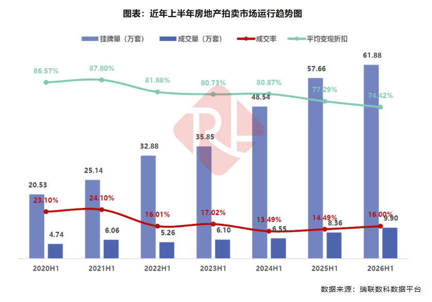
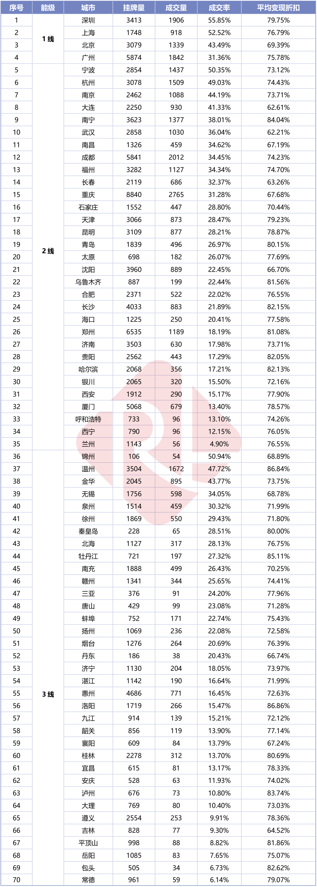
一句话核心
法拍房越卖越多、越卖越便宜，但成交量和参与度在回升——"以价换量"有效果，可价格还没稳住。
背景与关键数据
这里说的是司法拍卖房产（法拍房）——房主还不上房贷或欠债，房子被法院强制拍卖。法拍市场是楼市压力最直接的"晴雨表"：经济压力越大，被挂上来拍卖的房子越多。
几个关键数字用大白话解释：
- 挂牌量 61.88 万套（+7.32%）：上半年被拿出来拍卖的房子有 62 万套，比去年同期还多。说明断供、抵债的房子仍在增加。
- 成交量 9.90 万套（+18.54%）：真正拍出去的接近 10 万套，增速（18.5%）明显快于挂牌增速（7.3%）——买家在回来。
- 平均变现折扣 74.42%（同比 -2.87 个百分点）："变现折扣"= 成交价 ÷ 评估价。74% 意味着一套评估值 100 万的房子，平均只拍出 74 万，而且这个折扣比去年更低（打折更狠）。
图片解读
图1（趋势图，2020H1–2026H1）：四条线同框。浅蓝柱=挂牌量、深蓝柱=成交量，都在逐年抬高，2026H1 挂牌 61.88 万套创新高。红线=成交率，从 2021 年 24.1% 一路下滑到 2024 年 13.49% 的低点，2025–2026 略微回升到 14.49%→16.00%。绿线=平均变现折扣，从 86–87% 持续下滑到 74.42%。这张图一眼看懂的信号是：供给（挂牌）在涨、成交在回暖，但价格（折扣）一路走低——买家愿意接，但只肯在更便宜的价格接。
图2（分城市明细表）：按 1 线/2 线/3 线城市列出每城的挂牌量、成交量、成交率、折扣。可以看到分化很大——深圳成交率 55.85%、上海 52.52% 领跑，说明核心城市法拍房相对好卖；而兰州只有 4.90%、包头 6.73%，弱城市几乎无人接盘。折扣方面强弱城市差异反而不大（多在 62%–86%），说明"降价"是全国普遍现象。
为什么重要 / 对市场和经济的含义
法拍房是楼市的"压力测试"。成交量、参与度回升是积极信号（有人抄底了），但它建立在价格进一步下探的基础上，说明楼市还在"磨底"，没到"价稳量升"的健康拐点。对宏观而言，房价（尤其抵押品价值）继续下行，会压制居民财富感、银行抵押品和地方土地财政——这也是后面帖2（外资认亏）、帖11（政策可能加码）的共同底色。
延伸知识
"以价换量" vs "量价齐升"：楼市复苏通常分两步——先是降价换来成交回暖（以价换量，属于"被动去库存"），再是价格企稳、成交继续放量（量价齐升，属于"健康复苏"）。目前中国楼市卡在第一步。判断楼市是否真正见底，关键不是看成交量有没有回来，而是看价格能不能在成交回暖后止跌。这和股市"放量下跌"到"缩量企稳"再到"放量上涨"的三段论是类似的道理。
帖 2 · 垃圾债观察：外资地产基金集体"认亏"撤退
时间：2026-07-22（上午） 标签：#金融#
帖子原文
垃圾债观察：地产基金普遍浮亏40-50% #金融#
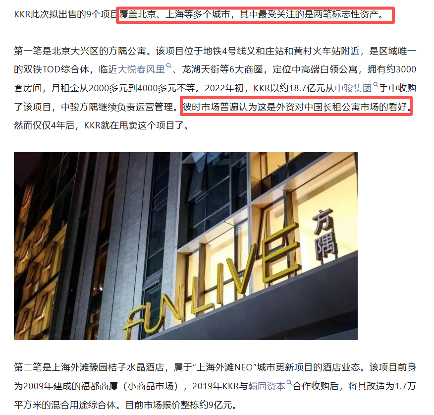
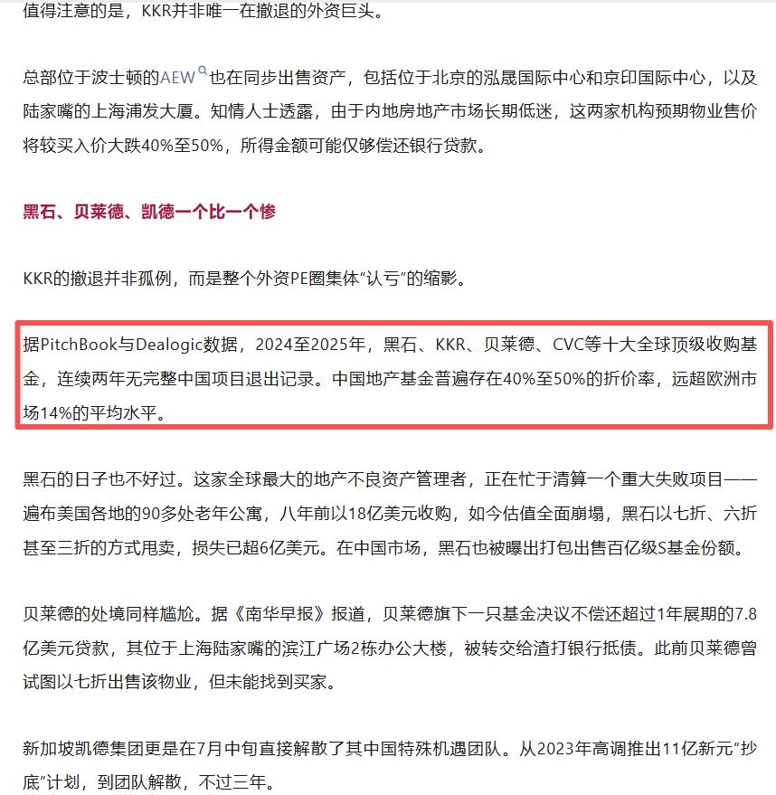
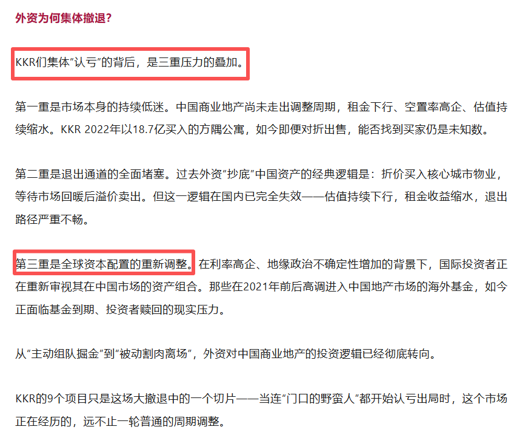
一句话核心
当年高调"抄底"中国地产的国际顶级私募（KKR、黑石、贝莱德、凯德）如今集体割肉离场，普遍亏损 40–50%——这不是个案，而是外资对中国商业地产投资逻辑的整体转向。
背景与关键数据
帖子标题的主角是私募股权基金（PE）里的"地产基金"，也就是专门募钱去买写字楼、公寓、酒店等商业物业、等升值后再卖出赚差价的机构。图里出场的都是全球最顶级的名字：
- KKR：2022 年初以约 18.7 亿元人民币收购北京大兴"方隅公寓"，当时被视为"外资看好中国长租公寓"的标志，结果仅 4 年后就甩卖，还一口气挂出 9 个项目。
- 黑石（Blackstone）、贝莱德（BlackRock）、凯德（CapitaLand）：图2/图3 提到，据 PitchBook 与 Dealogic 数据，2024–2025 连续两年，这些顶级收购基金没有一笔完整的中国项目退出记录；中国地产基金普遍存在 40%–50% 的折价，远超欧洲市场 14% 的平均水平。贝莱德一只基金决议不偿还 7.8 亿美元贷款，物业被转交银行抵债；凯德 7 月中旬直接解散了中国特殊机遇团队。
图片解读
三张图都是一篇长文的截图：
- 图1：讲 KKR 拟出售的 9 个项目，重点是北京方隅公寓和上海外滩桔子水晶酒店——曾经的"外资看好"标志资产，如今被摆上货架。
- 图2："黑石、贝莱德、凯德一个比一个惨"——列举各家亏损：黑石在美国 90 多处养老公寓项目八年前 18 亿美元收购、如今三到七折甩卖亏超 6 亿美元；中国地产基金 40–50% 折价 vs 欧洲 14%。
- 图3：总结外资集体撤退的三重压力：①市场本身持续低迷（租金下行、空置率高、估值缩水）；②退出通道全面堵塞（"折价买入、等回暖溢价卖出"的老逻辑失效）；③全球资本再配置（高利率+地缘不确定下，国际投资者重新审视中国仓位）。
为什么重要 / 对市场和经济的含义
外资 PE 被称为"门口的野蛮人"，最擅长逆势抄底。当连他们都开始认亏出局，说明这轮商业地产调整远超普通周期波动。 40–50% 的折价还意味着：这些资产背后的银行贷款可能面临损失，会通过金融体系传导压力。这条帖子和帖1（法拍房降价）互为印证——住宅端和商业端都在"价格出清"。
延伸知识
私募地产基金的"退出困境"：PE 基金一般有固定存续期（如 7–10 年），到期必须把资产卖掉、把钱还给出资人（LP）。当市场低迷、卖不出好价钱时，基金会陷入两难：硬扛到期要面对 LP 赎回压力，割肉卖出要坐实亏损。这就是图3 说的"被动割肉离场"。类比一下：就像你买房本想等涨价再卖，结果贷款到期银行催还款，只能亏本急售——机构的"急售"规模一大，就会进一步压低整个市场的成交价，形成负反馈。
帖 3 · 瑞银：美股还没把 AI 与企业盈利充分定价
时间：2026-07-22（上午） 标签：#美股#
帖子原文
瑞银：我们认为市场不是已经把AI增长定价得太充分，而是尚未充分计入美国企业未来几年的收入增长与现金回报率提升。我们的美股多头逻辑可以浓缩为七点：标普500未来18个月每股盈利预计上升约 25%；2026年标普500 EPS预计增长约 28%，2027年再增长 17%；中长期销售增长预期升至2003年以来最高水平；AI周期只有约两年，可能还有7—8年较高增长；AI资本开支正由云计算巨头扩散到电力、设备、自动化和传统工业；企业盈利能力和现金流回报率大幅提高；当前约20倍的远期市盈率，低于模型估算的合理值24倍以上。 #美股#
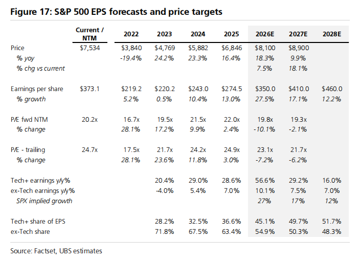
一句话核心
瑞银坚定看多美股，核心观点是"AI 泡沫论"错了——市场不是高估了 AI，而是低估了 AI 带来的盈利增长，标普 500 还有上涨空间。
背景与关键数据
这是一份典型的卖方"看多"研报。瑞银用七点论证"美股不贵"，最硬的两个数字：
- 未来 18 个月 EPS（每股盈利）+25%、2026 年 +28%、2027 年 +17%：EPS 是"公司赚的钱 ÷ 总股数"，是股价最核心的支撑。盈利涨得快，即使股价不动，估值也会自动变便宜。
- 当前远期市盈率约 20 倍 < 模型合理值 24 倍："市盈率（P/E）"= 股价 ÷ 每股盈利，衡量"你为 1 块钱盈利付多少钱"。瑞银说现在只有 20 倍，比它模型算出的"该值 24 倍"还低，所以有 20% 的估值修复空间。
图片解读
图1（瑞银标普500 EPS 与目标价预测表）：这是全帖的数据核心。逐行看：
- Price（价格）：当前 NTM（未来12个月）约 7534 点，2026E 目标 8100（较现价 +7.5%）、2027E 8900（+18.1%）。
- Earnings per share（每股盈利）：从 2025 年 274.5 → 2026E 350.0（+27.5%）→ 2027E 410.0（+17.1%）→ 2028E 460.0（+12.2%）。这正是文字里的盈利增长预测。
- P/E fwd NTM（远期市盈率）：20.2 倍 → 2026E 19.8 倍（估值不升反降，因为盈利涨得比股价快）。
- Tech+ earnings（科技板块盈利增速）：2026E 高达 56.6%，非科技（ex-Tech）只有 10.1%——印证了"盈利增长高度集中在科技/AI"这一点，也和帖6（中国出口价格分化）遥相呼应：全球都是"科技强、传统弱"。
为什么重要 / 对市场和经济的含义
这是"AI 多头 vs AI 泡沫"辩论中多头一方的完整论据。瑞银的逻辑是：只要盈利（分子）持续兑现，估值（分母是盈利）就不算贵。风险点在于——所有乐观都押注"AI 盈利必须持续高增长"，一旦 AI 资本开支放缓或盈利不及预期，20 倍的估值会瞬间显得很贵。投资者要区分"卖方目标价"和"客观事实"：这是瑞银的观点，不是既定结论。
延伸知识
"盈利驱动" vs "估值驱动"的上涨：股价上涨来自两部分——盈利（E）增长，或估值（P/E）扩张。健康的牛市是"盈利驱动"（公司真赚钱），危险的牛市是"估值驱动"（大家愿意为同样的盈利付更高价，即"市梦率"）。瑞银这份报告刻意强调"P/E 反而下降、全靠 EPS 拉动"，就是想说服你"这是健康的盈利驱动，不是泡沫"。历史上 1990 年代末互联网泡沫的破裂，正是因为估值远远跑在了盈利前面。判断当下 AI 行情，最该盯的就是这个"盈利能不能跟上股价"的赛跑。
帖 4 · zerohedge：美伊僵持推升油价，长端美债收益率冲高
时间：2026-07-22（上午） 标签：#其他国家经济#
帖子原文
zerohedge：美国和伊朗表示尚未准备好重返谈判桌。过去两周油价大幅上涨，周三伦敦布伦特原油上涨2.9%，接近每桶94美元。债券市场做出反应，美国10年期和30年期国债收益率上升至约两个月高点，担心通胀压力将促使美联储加息。随着11月中期选举临近，民调显示，特朗普在经济和冲突处理上评价不佳，这使得他的共和党同僚面临失去国会控制权的风险。 #其他国家经济#
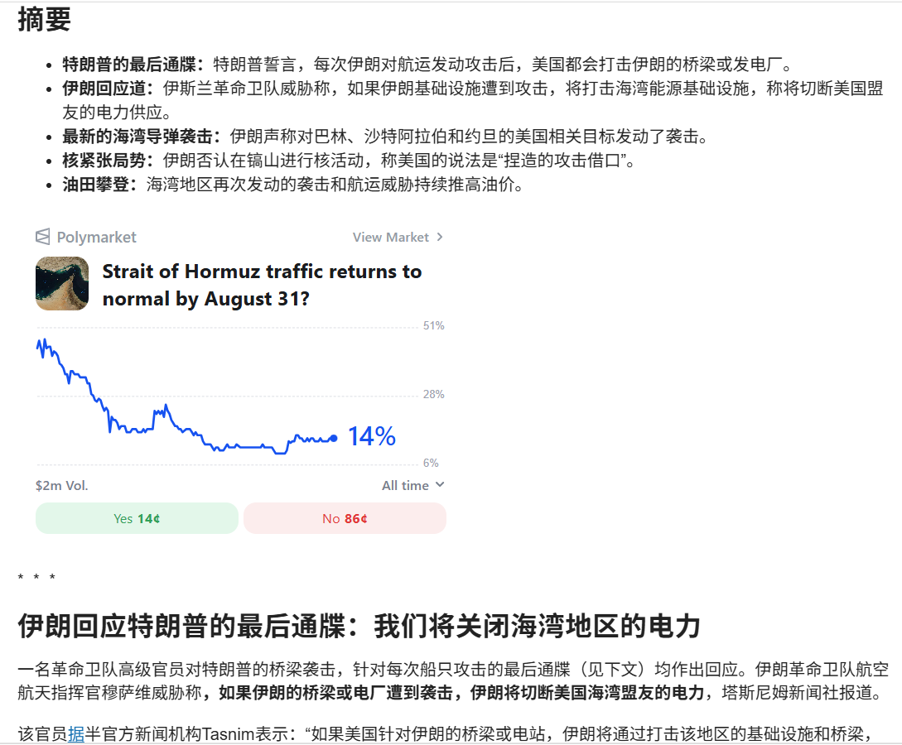
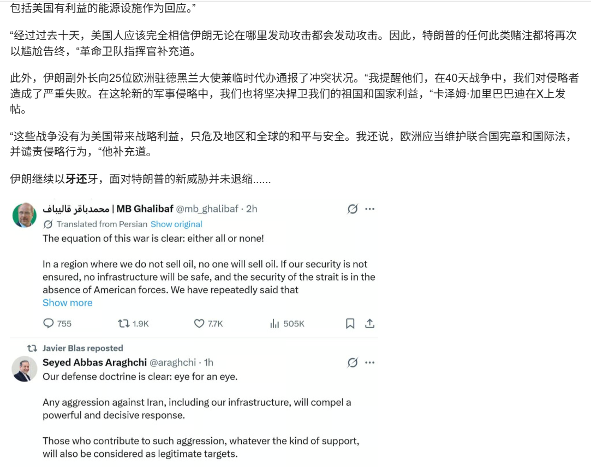
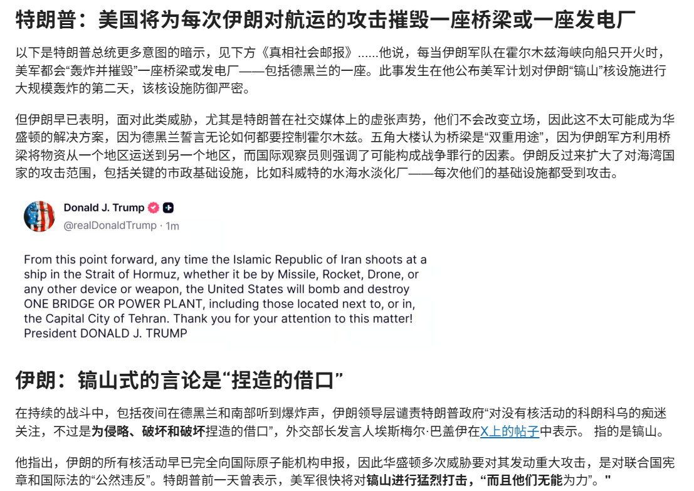
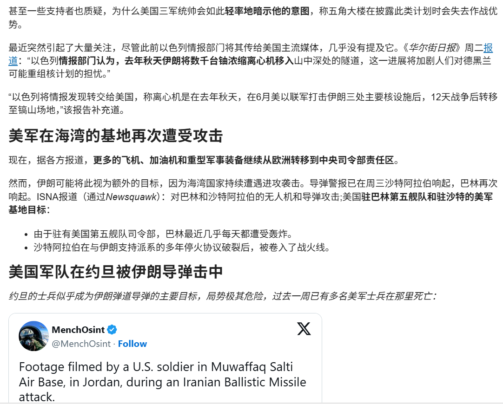
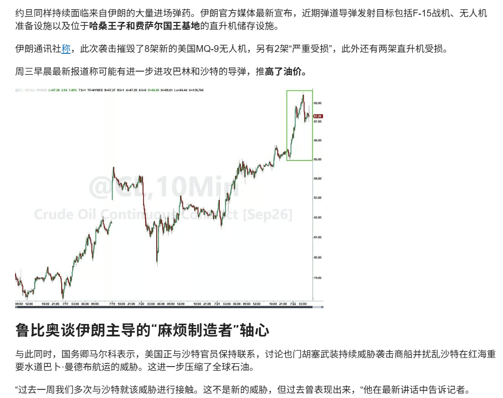
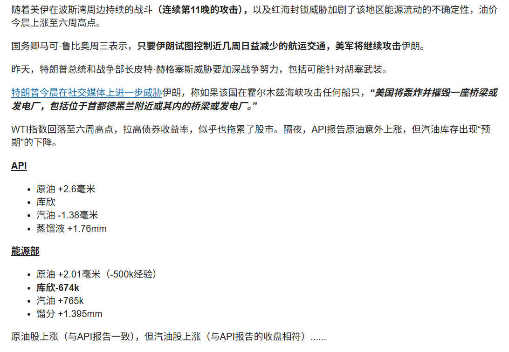
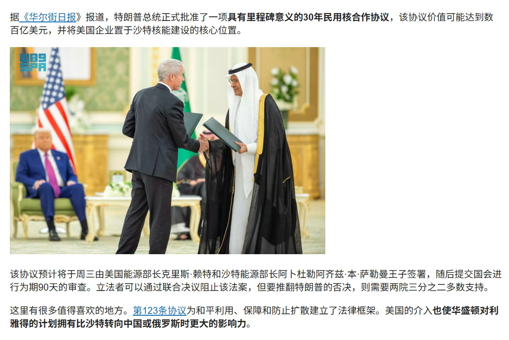
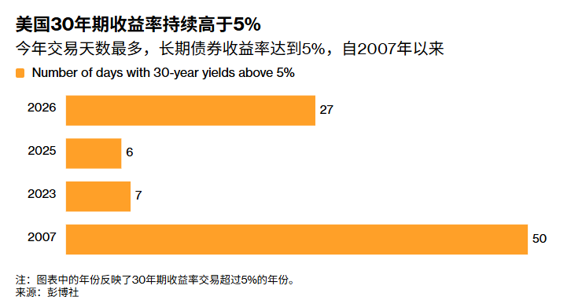
一句话核心
美伊冲突迟迟没缓和，油价冲到六周高点、逼近 94 美元，把"通胀预期"重新点燃，美债长端收益率跟着上到两个月高位——地缘政治正在通过"油"渗透进金融市场。
背景与关键数据
这是 zerohedge（一个以危机叙事著称的财经博客）的战情汇总，信息量很大，核心链条是：中东冲突 → 霍尔木兹海峡航运受威胁 → 油价涨 → 通胀预期升 → 债券收益率涨 → 拖累股市。
- 布伦特原油逼近 94 美元（周三 +2.9%），WTI 回到六周高点。
- 10 年期、30 年期美债收益率升至约两个月高点：油价涨会推高通胀，通胀高美联储就更难降息甚至可能加息，债券投资者要求更高收益率补偿——所以收益率上行。
- 政治背景：11 月美国中期选举临近，特朗普在"经济与冲突处理"上民调不佳，共和党有丢掉国会控制权的风险。
图片解读
八张图是这篇长文的连续截图，挑关键的说：
- 图1（Polymarket 预测盘）：问题是"霍尔木兹海峡航运能否在 8 月 31 日前恢复正常"，"Yes" 概率已从约 51% 一路跌到 14%（下方 Yes 14¢ / No 86¢）。博彩市场用真金白银投票：绝大多数人认为短期内航运恢复无望，冲突还要拖。（霍尔木兹海峡是全球约 1/5 石油海运的必经咽喉。）
- 图2/图3/图4：伊朗官员、特朗普的社媒喊话截图——特朗普威胁"伊朗每袭击一艘船，美国就炸毁一座桥或发电厂"，伊朗则以"以牙还牙"回应，还称击落 8 架美军 MQ-9 无人机。双方姿态强硬、无退让迹象。
- 图5（WTI 原油 10 分钟 K 线）：7/17 到 7/22，油价从约 79 美元一路涨到约 88 美元，绿框标出最近这波急拉。
- 图6：API 与能源部库存数据——原油小幅累库、汽油去库，整体偏紧。
- 图7：特朗普批准与沙特的 30 年民用核合作协议（价值或达数百亿美元），把美国企业放在沙特核能建设的核心——地缘博弈里美国也在拉拢沙特。
- 图8（彭博柱状图，全帖最值得记的一张）："美国 30 年期收益率高于 5% 的交易天数"：2026 年已有 27 天，2025 年仅 6 天、2023 年 7 天，而上一次这么频繁要追溯到 2007 年的 50 天。说明长端利率正处在近 20 年少见的高位区间。
为什么重要 / 对市场和经济的含义
这条帖子把"地缘—油价—通胀—利率"的传导链画得很清楚。对资产价格的含义：油价上行 → 通胀黏性 → 美联储降息推迟甚至转向加息（呼应帖10）→ 长端美债收益率高企（图8）→ 高估值成长股、REIT、高杠杆企业承压。地缘冲突之所以是宏观大事，不是因为战争本身，而是因为它会通过油价改写整个利率与通胀的剧本。
延伸知识
"油价—通胀—利率"三角：石油是几乎所有工业品和运输的成本项，油价大涨会像"税"一样抬高全社会物价（输入型通胀）。央行为压通胀会维持高利率，而利率是资产定价的"地心引力"——无风险利率越高，股票、房产等风险资产的合理估值越低。历史上 1973 年、1979 年两次石油危机都直接引发了高通胀+经济衰退（"滞胀"）。所以每当中东生乱，全球交易员第一反应都是盯住油价和美债收益率。Polymarket 这类"预测市场"则提供了一个有趣的观察工具：它用下注赔率把"事件发生概率"量化出来，往往比新闻标题更冷静。
帖 5 · 马建堂：人口结构失衡，退休年龄或需继续上调
时间：2026-07-22（上午） 标签：#人口#
帖子原文
马建堂：目前，我国20-59 岁男性人口多出女性3000 万人，农村高价彩礼、换亲等现象，都与这一失衡有着直接关联。在"十五五""十六五"时期，还需持续研究进一步提高退休年龄的必要性与紧迫性。 #人口#
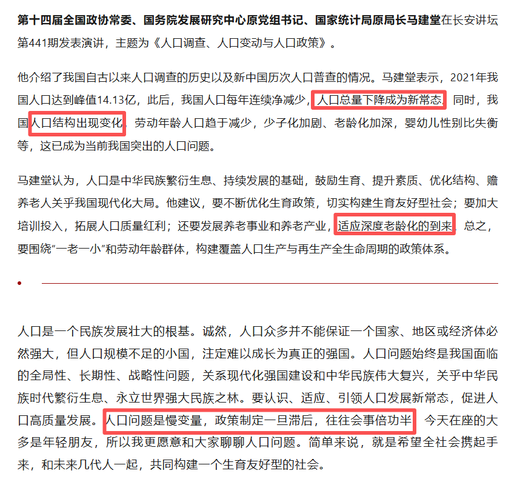
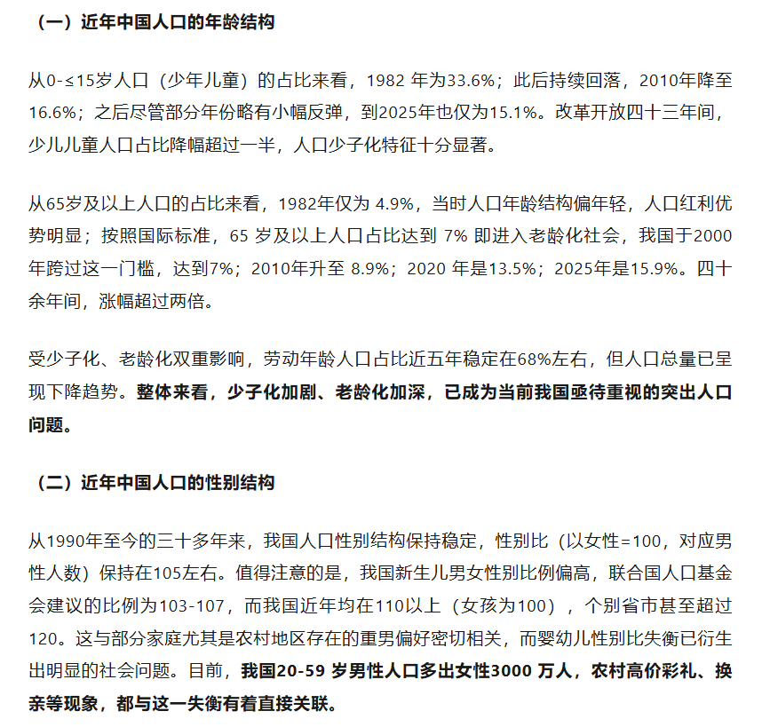
一句话核心
前国家统计局局长马建堂点出两大人口难题：适婚年龄男性比女性多 3000 万（性别失衡），以及老龄化加深、退休年龄可能还要继续往后推。
背景与关键数据
发言人马建堂是第十四届全国政协常委、国务院发展研究中心原党组书记、国家统计局原局长，身份权威，观点有政策风向意义。图里的关键数据：
- 人口 2021 年见顶 14.13 亿，此后连续净减少，"人口总量下降成为新常态"。
- 少儿（0–15 岁）占比：1982 年 33.6% → 2010 年 16.6% → 2025 年仅 15.1%，四十余年腰斩，少子化显著。
- 65 岁以上占比：1982 年 4.9% → 2000 年 7%（跨过国际"老龄化社会"门槛）→ 2020 年 13.5% → 2025 年 15.9%，四十年涨超两倍。
- 劳动年龄人口占比近五年稳定在 68% 左右，但总量已下降。
- 性别比：总人口性别比约 105（女=100），但新生儿性别比近年在 110 以上（联合国建议 103–107），个别省市超 120。20–59 岁男性比女性多约 3000 万。
图片解读
- 图1：马建堂在"长安讲坛"第 441 期的演讲要点截图，主题《人口调查、人口变动与人口政策》。强调"人口总量下降成为新常态""人口结构出现变化""适应深度老龄化的到来""人口问题是慢变量，政策制定一旦滞后，往往会事倍功半"。
- 图2：分两部分给数据。(一) 年龄结构——少儿占比与老年占比的历史变化（就是上面那组数字）；(二) 性别结构——性别比长期稳定在 105，但新生儿性别比偏高（110+），与部分家庭尤其农村的重男偏好相关，衍生出高价彩礼等社会问题。
为什么重要 / 对市场和经济的含义
人口是决定一个经济体长期潜在增长的"慢变量"。这条帖子对宏观的含义：①劳动力见顶下降 + 老龄化加深 → 潜在增速下移、养老与医疗支出压力上升 → 是"延迟退休"的根本原因（用延长工作年限来缓解养老金收支缺口和劳动力短缺）；②性别失衡与高彩礼会进一步压制结婚率和生育率，形成"低生育—老龄化"的自我强化。长期看，这利好养老、医疗、保险等"银发经济"，利空依赖年轻人口的地产、教育等需求。
延伸知识
"人口红利"与"人口负债"：一个国家劳动年龄人口占比高、要抚养的老人小孩少时，储蓄多、生产力旺，叫"人口红利"（中国 1980s–2010s 高增长的重要引擎）。当老人占比快速上升、劳动人口下降，红利就转为"负债"——干活的人少、要养的人多。衡量这个的指标叫抚养比。日本是前车之鉴：1990 年代进入老龄化后，长期陷入低增长、低利率、低通胀的"日本化"。这也是为什么帖7 会特别点名"日本超长期国债失去接盘者"——人口老化最终会通过养老金、储蓄结构传导到债券市场。
帖 6 · 巴克莱：出口价格转正是"假象"，制造业仍在通缩
时间：2026-07-22（上午） 标签：#经济数据#
帖子原文
巴克莱：出口价格改善高度集中于科技行业。大量传统制造业出口价格仍在下降：食品饮料-10%、木制品-7%、纸制品-7%、纺织品-5.4%、鞋类-8.6%、家具-11.8%、玩具-11.7%、汽车-2.5%。所以不能因为整体出口价格或PPI转正，就得出"中国制造业已经走出通缩"的结论。更准确的状态是：AI与高科技部门出现再通胀，传统制造部门仍然处于价格通缩。PPI转正不代表过剩问题已经解决，对应央行最新表述首次加入经济存在"结构性分化"。 中国出口持续扩大，已经引发主要贸易伙伴的警惕。重点行业包括：电动车；电池；光伏；化工；钢铁和金属制品；其他清洁技术产品。欧盟与中国正在就多个行业和巨额贸易逆差展开谈判。出口可以暂时缓解产能过剩，却不能永久替代国内再平衡。 #经济数据#
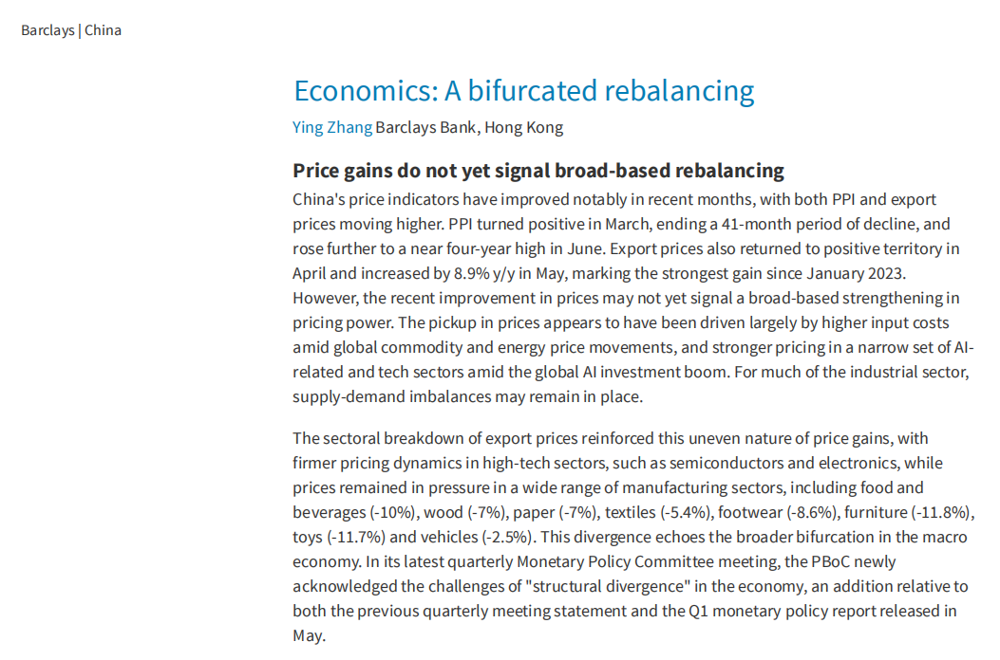
一句话核心
别被"PPI 转正、出口价格上涨"骗了——涨价只集中在半导体等高科技，占大头的传统制造业（家具、玩具、纺织）出口价格还在跌两位数，中国制造整体并没走出通缩。
背景与关键数据
先解释两个术语：
- PPI（生产者价格指数）：衡量工厂"出厂价"的通胀指标。PPI 为负=工厂产品在降价=典型的"产能过剩、供大于求"信号（工业通缩）。
- 巴克莱指出：PPI 已于 3 月转正，结束了长达 41 个月的下跌，6 月升到近四年高点；出口价格 4 月转正、5 月同比 +8.9%（2023 年 1 月以来最强）。
但巴克莱泼了盆冷水：这波涨价"高度集中"在 AI/半导体，是输入成本上升 + 科技板块定价强带动的，而传统制造业出口价格仍在深跌——食品饮料 -10%、家具 -11.8%、玩具 -11.7%、鞋类 -8.6%……这就是"结构性分化"，央行也首次在货币政策例会里承认了这个词。
图片解读
图1（巴克莱报告英文原文截图）：标题 "Economics: A bifurcated rebalancing"（一场"分叉式"的再平衡）。核心句是 "Price gains do not yet signal broad-based rebalancing"（价格上涨还不代表全面的再平衡）。报告解释：PPI 3 月转正结束 41 个月下跌，6 月近四年高点；出口价格 5 月 +8.9%，为 2023 年 1 月来最强，但主要由高投入成本和 AI 相关的窄幅科技板块驱动，多数工业行业供需失衡依旧。最后点出央行首次承认"structural divergence（结构性分化）"。
为什么重要 / 对市场和经济的含义
这条帖是理解当下中国经济最关键的一条——"结构性分化"是今天多条帖子的共同主题（帖3 美股科技强、帖11 花旗、帖12 奢侈品）。含义：①宏观数据（PPI 转正）会掩盖内部真实的冷热不均，看数据要看结构；②传统制造仍通缩，意味着相关企业利润薄、就业与工资承压，居民消费难起来；③"用出口消化过剩产能"正在引发欧盟等贸易伙伴警惕（反补贴、加关税），这条路走不长，最终还得靠"国内再平衡"（提振内需）。
延伸知识
"再平衡（rebalancing）"是什么？ 指一个经济体从过度依赖投资和出口，转向更多依靠国内消费拉动增长。中国长期是"高投资、高出口"模式，导致某些行业产能远超国内需求（产能过剩），只能靠压低价格出口消化——这既压低了本国 PPI（通缩），又冲击了别国产业（贸易摩擦）。真正的"再平衡"需要居民敢消费、能消费，而这又受制于房价下跌（帖1、2）和人口老化（帖5）带来的"不敢花钱"。所以你会发现今天这 13 条帖子其实环环相扣：房价—外资—通缩—消费—人口，讲的是同一个"中国如何走出结构性困境"的故事。
帖 7 · 摩根士丹利：央行退场后，谁来接盘政府债券？
时间：2026-07-22（上午） 标签：#金融#
帖子原文
摩根斯坦利：央行退出后，谁来购买不断增加的政府债券？需要多高的收益率，市场才能完成消化？ 过去十多年，各国央行通过量化宽松成为"不计价格"的结构性买家。现在央行缩表、减少购债，而政府融资规模仍处于高位，市场越来越依靠银行、基金、家庭、海外投资者和养老金等私人部门。这些投资者与央行最大的区别是：央行按照政策目标买债，私人投资者只有在价格足够便宜时才买。因此，未来政府债券市场的核心变化不是供给无法消化，而是：债券收益率可能需要维持在更高水平；收益率曲线可能更加陡峭；长期限债券的波动率可能上升；不同国家的投资者结构会决定市场脆弱点。 我们认为，目前最严峻的供需结构出现在：日本超长期国债；英国长期国债。相对而言：美国国债买家更加多元，供给仍能被吸收；欧元区银行和海外投资者正在接替欧洲央行，但外围国家依然容易受到外资撤退影响。 #金融#
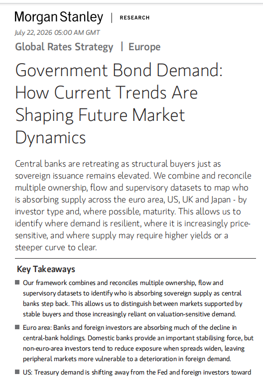
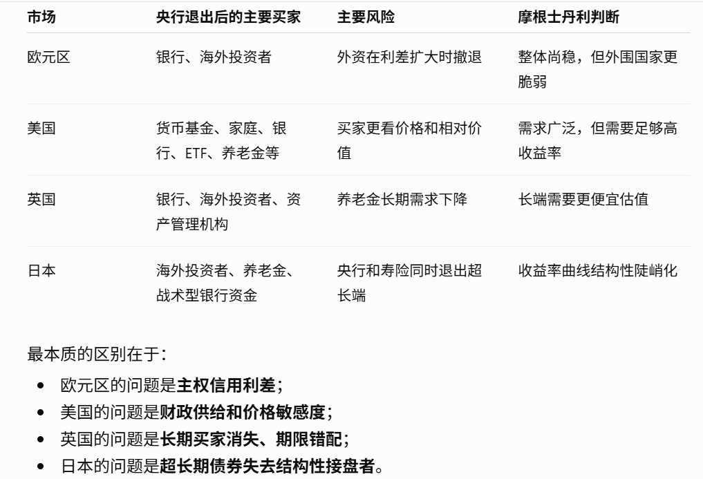
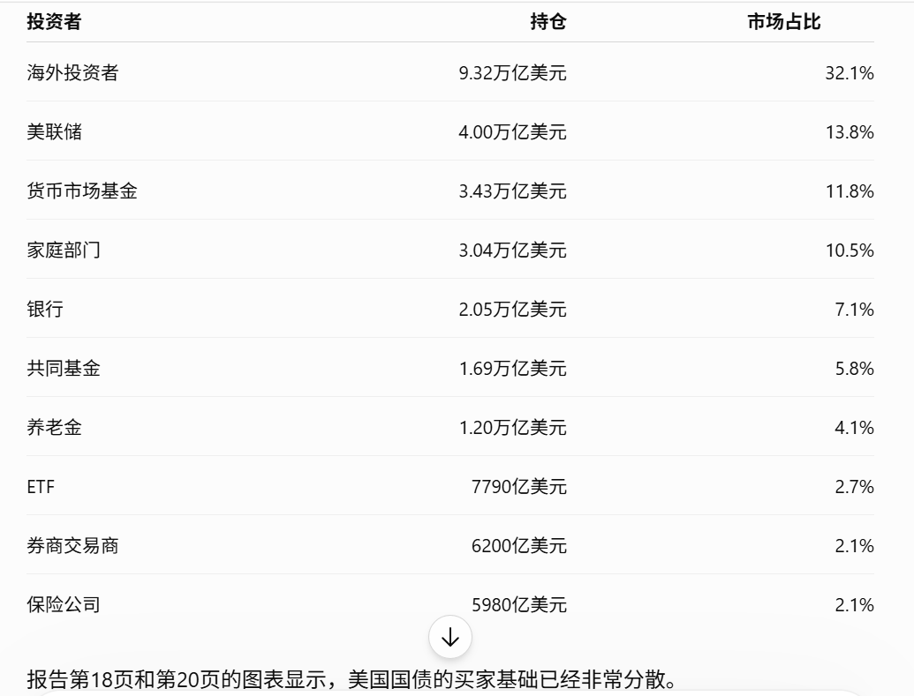
一句话核心
过去十年央行是"不问价格"的政府债大买家，如今它们退场，接盘的私人投资者只肯在"够便宜"（收益率够高）时才买——所以未来各国长债收益率可能被迫维持高位，日本超长债和英国长债最危险。
背景与关键数据
先解释关键机制：量化宽松（QE）——过去十多年，各国央行（美联储、欧央行、日央行）大量印钱买入政府债券，把利率压到极低。央行买债"不计成本"（为了政策目标，不为赚钱），是债市的"托底买家"。
现在央行反过来缩表（QT）、减少买债，但政府的借钱需求（发债量）依然巨大。这就出现一个缺口：谁来接手央行不买的那部分债？ 只能靠银行、基金、家庭、海外投资者、养老金等"私人买家"。而私人买家是精明的——只在价格便宜（收益率高）时才买。结论：为了让市场买单，长债收益率可能被迫维持高位、收益率曲线变陡、长债价格波动加大。
图片解读
- 图1：摩根士丹利研报封面，标题 "Government Bond Demand: How Current Trends Are Shaping Future Market Dynamics"，日期 2026 年 7 月 22 日。核心是研究"央行退场后各国政府债的接盘结构"。
- 图2（四国对比表，最实用的一张）：逐行看"央行退出后的主要买家 / 主要风险 / 大摩判断"——
- 欧元区：买家是银行、海外投资者；风险是外资在利差扩大时撤退；判断"整体尚稳，但外围国家更脆弱"。
- 美国：买家最多元（货币基金、家庭、银行、ETF、养老金）；判断"需求广泛，但需要足够高收益率"。
- 英国：风险是养老金长期需求下降；判断"长端需要更便宜估值"。
- 日本：风险是央行和寿险同时退出超长端；判断"收益率曲线结构性陡峭化"。
- 一句话总结四国"病根"：欧元区=主权信用利差、美国=财政供给与价格敏感度、英国=长期买家消失、日本=超长期债券失去结构性接盘者。
- 图3（美国国债持有者结构表）：海外投资者 9.32 万亿美元（32.1%）居首，美联储 4.00 万亿（13.8%）、货币市场基金 3.43 万亿（11.8%）、家庭 3.04 万亿（10.5%）、银行 2.05 万亿（7.1%）……买家高度分散。这正是大摩说"美国国债买家最多元、供给仍能被吸收"的证据——盘子够大够杂，不依赖单一买家。
为什么重要 / 对市场和经济的含义
这条帖子解释了为什么全球长端利率可能"高得更久"（higher for longer）——不只是通胀问题，更是"少了央行这个大买家、政府又拼命发债"的供需结构问题。含义：①长债收益率维持高位会持续压制估值（呼应帖4 图8 的"30 年期收益率频繁破 5%"）；②日本、英国的超长债是全球债市潜在的"脆弱点"，一旦失序可能引发跨市场波动；③对投资者而言，长久期债券的波动风险上升，"买长债躺赢"的时代结束了。
延伸知识
收益率曲线的"陡峭化"（steepening）：把不同期限（2 年、10 年、30 年）国债的收益率连成线，就是"收益率曲线"。正常情况下期限越长收益率越高（曲线向上倾斜）。当长端收益率涨得比短端快，曲线变"陡"——这次就是因为"长债缺买家、要给更高收益率补偿"。陡峭化对银行通常是好事（短借长贷、赚息差更多），但对持有大量长债的养老金、寿险是账面亏损。日本央行长期把收益率压平（YCC 政策）后退出，导致超长债一下失去最大买家，正是大摩最担心的"脆弱点"。
帖 8 · 《中国货币市场》：美元上半年走强，避险碾压黄金
时间：2026-07-22（上午） 标签：#金融#
帖子原文
《中国货币市场》：2026年上半年，美元指数累计上涨约3.2%，美元相对强势。上半年的美元指数行情，本质上是市场对美国政策风险、地缘风险、货币政策预期三轮定价修正的过程。本次美伊地缘冲突中，美元避险表现全面碾压黄金、日元、美债三大传统避险资产，资产价格走势出现显著分化。 下半年美元指数走势将由地缘风险消退节奏、美国通胀回落斜率、美联储货币政策落地情况三大变量共同决定。 #金融#
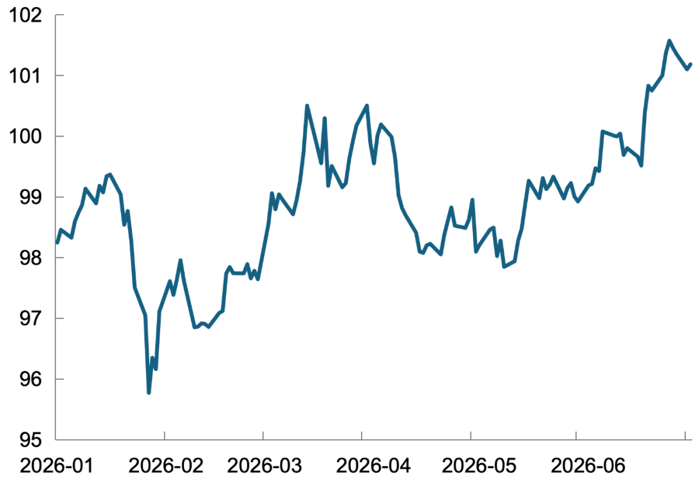
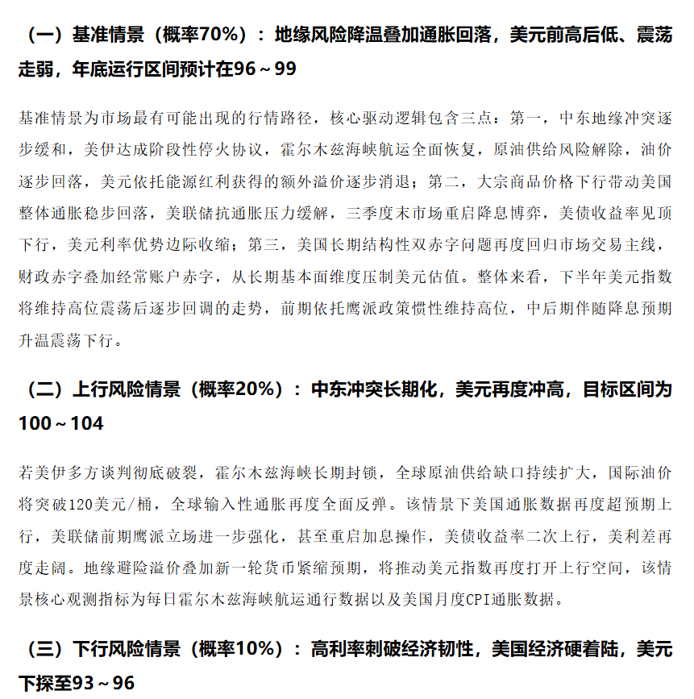
一句话核心
2026 上半年美元指数涨了 3.2%，在美伊冲突中，美元的避险表现比黄金、日元、美债都强；下半年美元怎么走，取决于地缘风险、通胀回落和美联储政策三件事。
背景与关键数据
- 美元指数（DXY）：衡量美元对一篮子主要货币（欧元、日元、英镑等）的强弱。上半年 +3.2%，美元偏强。
- 核心观点：这轮美伊冲突里，美元的"避险"表现全面胜过黄金、日元、美债这三个传统避险资产——意味着市场一慌就买美元，而不是像以往那样一窝蜂买黄金或日元。这是一个值得注意的"避险格局变化"。
图片解读
- 图1（美元指数走势图，2026-01 至约 07）：清晰可见美元指数从年初约 98 一路震荡上行，中间在 2 月探底约 95.8，随后反复上冲，到近期升破 101、最高约 101.5。整体是"前低后高、震荡走强"的形态，印证 +3.2% 的涨幅。
- 图2（下半年三种情景）：给出概率化预测——
- 基准情景（概率 70%）：地缘降温 + 通胀回落，美元前高后低、震荡走弱，年底区间 96–99。
- 上行风险情景（概率 20%）：中东冲突长期化，油价破 120 美元、通胀反弹、美联储更鹰甚至加息，美元冲高至 100–104。
- 下行风险情景（概率 10%）：高利率刺破经济、美国硬着陆，美元下探 93–96。
为什么重要 / 对市场和经济的含义
美元是全球资产的"定价锚"。美元强，通常对应：新兴市场货币和资产承压、以美元计价的大宗商品（含黄金）受压制、跨境资本回流美国。这条帖子和帖4、帖10 是一套的——地缘风险 + 美联储转鹰 → 美元走强。特别值得记的是"美元避险碾压黄金"这个反常现象：说明当前市场对美元流动性的偏好极高。对配置者的启示：三种情景的分水岭是"中东会不会失控"和"通胀能不能回落"，可以据此动态调整美元和黄金的相对仓位（注意：这是信息，不是投资建议）。
延伸知识
"避险资产"为什么会"打架"？ 传统避险三剑客是黄金、日元、美债，加上美元。理论上市场恐慌时它们都该涨，但它们的驱动逻辑不同：黄金怕的是"实际利率上行"（利率高时，持有不生息的黄金机会成本大）；日元避险靠的是"套息交易平仓回流"；美债在"通胀型危机"里反而会跌（因为通胀预期推高收益率、压低债价）。这次是"地缘+通胀+高利率"的组合，恰好利多美元、利空另外三个——所以出现"美元避险碾压黄金"的分化。这提醒我们：没有永远的避险资产，要看清每一轮危机的"性质"（是通缩型还是通胀型、是流动性危机还是信用危机）再决定避到哪里。
帖 9 · 伯恩斯坦：撑住油价的四个"缓冲垫"正在耗尽
时间：2026-07-22（上午） 标签：#金融#
帖子原文
伯恩斯坦：中东冲突以来，全球海运石油供应出现了极大缺口，但油价只回到约90美元，没有出现类似历史石油危机的暴涨。我们认为，原因不是市场已经适应，也不是霍尔木兹海峡运输已经恢复，而是四个"缓冲垫"暂时填补了缺口：OECD国家释放战略石油储备；中国大幅减少进口并动用国内库存；全球商业库存下降；高油价和实物短缺导致需求被破坏。 我们估算：OECD紧急释放的4亿桶战略储备，到9月底可能基本用完；中国库存若继续以每月约7500万桶的速度下降，到年底可能只剩相当于60天需求的安全覆盖；届时供需平衡将更多依赖OECD商业库存下降；商业库存每减少1亿桶，历史上通常对应油价上涨约10美元/桶。因此，油价真正危险的时间点可能不是冲突刚爆发的时候，而是冲突持续数月以后，当便宜而不透明的库存缓冲逐渐耗尽时。 #金融#
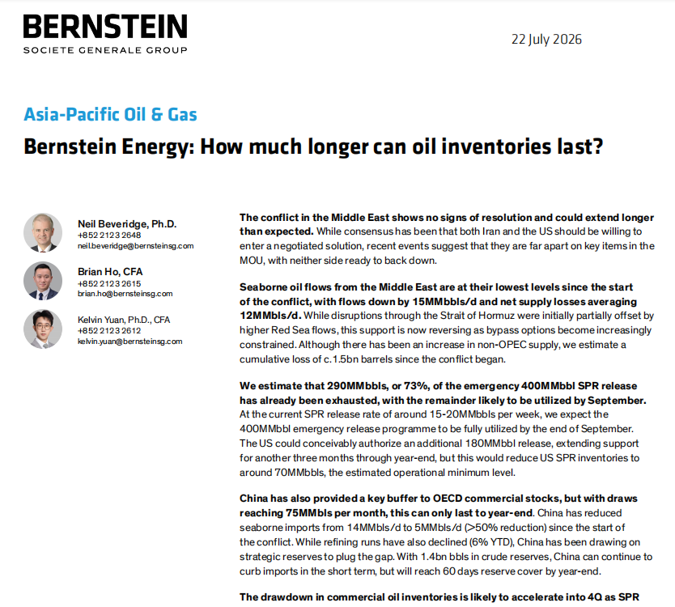
一句话核心
中东断供这么严重，油价却"只"涨到 90 美元，是因为有四个临时"库存缓冲垫"在填坑；但这些储备正快速见底，真正的油价危险期在几个月后。
背景与关键数据
伯恩斯坦（Bernstein）这份能源报告问了一个反直觉的问题：中东供应缺口这么大，油价为什么没像 1973、1979 那样暴涨？ 答案是四个"缓冲垫"暂时补了缺口：
- OECD 国家释放战略石油储备（SPR）：紧急释放的 4 亿桶，已用掉约 73%（2.9 亿桶），9 月底可能基本用完。
- 中国减少进口 + 动用国内库存：海运进口从 1400 万桶/日砍到 500 万桶/日（降超 50%），并以每月约 7500 万桶速度消耗储备，到年底可能只剩相当于 60 天需求的安全垫。
- 全球商业库存下降。
- 高油价"破坏"了需求（太贵了大家少用）。
最关键的量化关系：商业库存每减少 1 亿桶，历史上通常对应油价上涨约 10 美元/桶。 所以缓冲垫耗尽后，油价补涨的风险很大。
图片解读
图1（伯恩斯坦报告英文原文截图，日期 22 July 2026）：标题 "Bernstein Energy: How much longer can oil inventories last?"（油库存还能撑多久？）。要点：中东冲突无缓和迹象；中东海运石油流量降至冲突以来最低，日均净供应损失约 1200 万桶；估算 2.9 亿桶（73%）的 4 亿桶紧急 SPR 释放已耗尽，剩余部分 9 月前也将用完；中国每月动用约 7500 万桶储备填缺口，只能撑到年底；商业库存下降将在四季度加速。整份报告就是在给"油价延后暴涨"的风险倒计时。
为什么重要 / 对市场和经济的含义
这条帖子给帖4（油价冲高）补上了一个关键的时间维度：市场现在觉得"油价可控"，但那是靠一次性的库存释放硬撑的。一旦 9 月—年底缓冲垫见底，若冲突还在，油价可能才真正发力。含义：①通胀和利率的"二次上冲"风险在下半年而非现在（呼应帖8 的"上行情景"、帖10 的"央行转鹰"）；②这是一个典型的"市场低估的尾部风险"——表面平静，底下的安全垫在悄悄消失。
延伸知识
战略石油储备（SPR）是什么？ 各国政府储备的应急原油，专门在供应中断、油价飙升时释放出来"平抑价格"，相当于石油市场的"平准基金"。但它是一次性的弹药——放出去就少了，事后还得高价买回来补库（反而推高需求）。所以 SPR 只能"救急"，不能改变长期供需。这引出一个投资中的重要思维：要区分"价格稳定"是来自真实的供需平衡，还是来自不可持续的临时干预。 前者可信，后者往往是"平静的假象"，一旦干预弹药耗尽，价格会加速回归基本面。油市如此，汇市（干预汇率）、股市（平准基金）也是同理。
帖 10 · 瑞银：用大模型量化央行语气，美联储、欧央行同时转鹰
时间：2026-07-22（上午） 标签：#金融#
帖子原文
瑞银：我们利用大型语言模型分析央行官员的演讲；采访；新闻发布会；政策相关公开发言，然后将每段讲话按照"鹰派—鸽派"进行评分，观察央行沟通语气的变化，以及究竟是通胀、增长、就业、利率还是资产负债表推动了这种变化。 最新结论是美联储和欧洲央行的沟通正在重新转向鹰派；日本央行仍偏鹰，但语气上升趋势已经停滞。美联储沟通语气在6月份一度停滞，但7月突然向上，首次自2025年6月以来突破中性线。不过，语气刚刚进入鹰派区域，程度仍远低于2022—2023年通胀高峰期。所以更准确的表述是美联储由"略偏鸽"转为"温和偏鹰"。 美联储和欧洲央行同时转鹰，意味着市场此前押注的快速宽松可能需要延后。受影响最大的通常是两年期国债；短端利率期货；高估值成长股；REIT；高杠杆企业。 黄金仍具有政策不确定性对冲价值，对冲实际政策失误；能源通胀；货币信用和财政风险；地缘政治风险。 #金融#
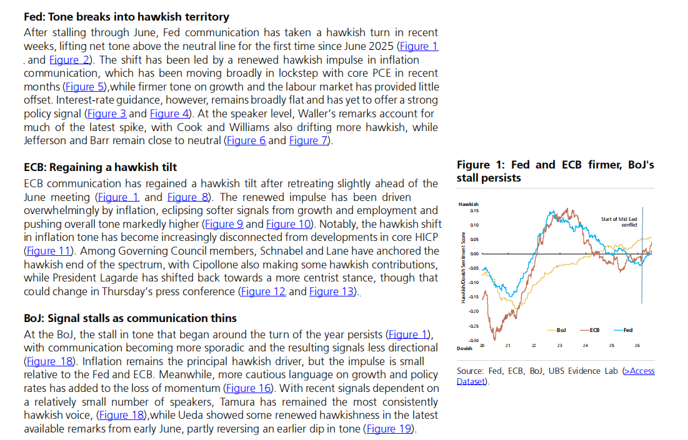
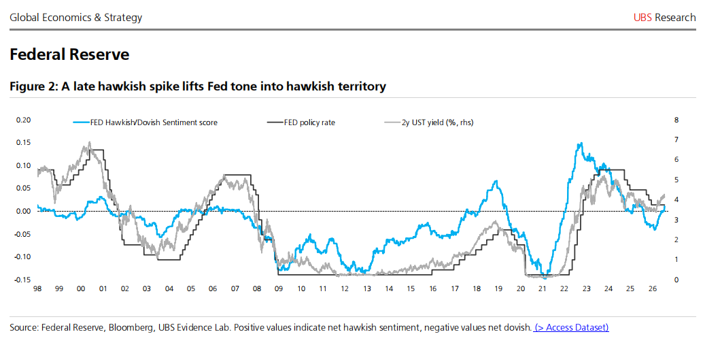
一句话核心
瑞银用 AI 大模型给央行官员的每一次讲话打"鹰鸽分"，发现美联储 7 月突然转鹰、首次突破中性线，欧央行也在转鹰——意味着"快速降息"的押注要落空了。
背景与关键数据
先解释"鹰派/鸽派"：鹰派 = 更担心通胀、倾向加息或维持高利率；鸽派 = 更担心增长/就业、倾向降息放水。 央行的"嘴"（讲话措辞）往往比"手"（实际动作）先变，所以交易员极度重视央行沟通的语气。
瑞银的创新在于用大语言模型（LLM）把主观的"讲话语气"量化成分数（正值=鹰、负值=鸽）。最新结论：
- 美联储：6 月一度停滞，7 月突然向上，首次自 2025 年 6 月以来突破中性线，从"略偏鸽"转为"温和偏鹰"（但远没到 2022–23 通胀高峰的鹰派程度）。
- 欧央行：6 月会议前略退，之后重新转鹰，主要由通胀驱动。
- 日本央行：仍偏鹰，但上升趋势停滞、信号变弱（因讲话变少）。
图片解读
- 图1（瑞银 Figure 1：Fed/ECB/BoJ 语气对比）：三条线是美联储、欧央行、日央行的"鹰鸽情绪分"。可以看到 Fed（蓝）和 ECB（红）近期同步向上（转鹰），BoJ（黄）走平。图中特别标注了 "Start of Mid East conflict（中东冲突开始）" 的时点——暗示地缘冲突推升通胀预期，是这轮转鹰的催化剂之一。
- 图2（瑞银 Figure 2：美联储语气 vs 政策利率 vs 2 年期美债收益率，1998–2026）：蓝线=美联储鹰鸽分，黑线=联邦基金利率，灰线=2 年期美债收益率。三者高度同步。最右端可见蓝线在 2022–23 冲到历史高位（对应暴力加息），随后回落，近期出现"late hawkish spike（迟来的鹰派尖峰）"重新翘头。说明央行语气对短端利率有很强的领先/同步指示意义。
为什么重要 / 对市场和经济的含义
这条帖子是今天"利率主线"的收口。含义非常直接：央行转鹰 → 降息延后 → 对利率最敏感的资产承压。瑞银点名的受害者——2 年期国债、短端利率期货、高估值成长股、REIT、高杠杆企业——都是"靠低利率吃饭"的品种。同时它给出对冲工具：黄金仍能对冲政策失误、能源通胀、财政与地缘风险（呼应帖8 的黄金讨论）。把帖4、7、8、9、10 连起来看，是一条完整的逻辑链：中东冲突→油价→通胀→央行转鹰→长端利率高企→风险资产承压、美元与黄金各有对冲价值。
延伸知识
"央行沟通"为什么是一门独立学问？ 现代央行把"预期管理"当作核心工具——很多时候不用真加息，只要官员放几句鹰派狠话，市场就会自己把利率预期打上去，达到收紧效果（这叫"前瞻指引 forward guidance"）。因此华尔街有专门的"央行观察家（Fed watcher）"逐字解读讲话。瑞银用 LLM 做这件事是个前沿应用：把海量讲话文本自动打分，去掉人为主观、还能拆解"到底是通胀、就业还是利率在驱动语气变化"。这也是 AI 在金融研究里的典型落地场景——不是预测股价，而是把非结构化的文本信息（讲话、财报、新闻）批量结构化成可量化的信号。
帖 11 · 花旗：这次不是 2024 年 9 月，政策难有"大转向"
时间：2026-07-22（上午） 标签：#经济数据#
帖子原文
花旗：我们认为，当前与2024年9月最大的不同有四点，1）政策层没有迫在眉睫的"保5"压力；2）即使当前居民需求和传统行业价格仍弱，但名义经济并没有像当时那样陷入广泛负增长。3）地方公开债务的短期风险已经下降；4）2024年9月，上证指数只有约2700点，市场信心极弱。目前上证约3850点，虽然AI和半导体板块近期剧烈波动，但并不是全市场陷入绝望。因此我们预计，政治局会议通稿可能重新使用**"加强逆周期政策调节"，这一表述可能是过去一年首次重新出现，属于明显的政策措辞升级。但措辞升级不代表政策全面转向**。若上半年财政偏紧得到纠正，广义政府赤字占GDP比例有望在2026年重新升至接近历史高位。 #经济数据#
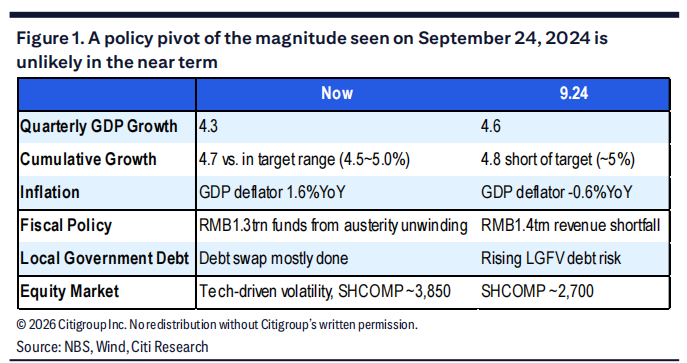
一句话核心
花旗认为，别指望这次政治局会议像 2024 年 9 月那样搞"强刺激"——因为经济和市场都没到当时那么糟，政策会"措辞升级"（重提"加强逆周期调节"）但不会"全面转向"。
背景与关键数据
背景：2024 年 9 月是中国政策的一个重要转折点——当时经济下行压力大、上证只有 2700 点、信心极弱，随后出台了一轮强力刺激。市场现在又在期待即将召开的政治局会议是否会"复刻"那次强刺激。花旗的判断是"这次不一样"，列了四点差异：
- 没有迫在眉睫的**"保 5"压力**（保住 5% GDP 增速目标）——当前 Q2 GDP 增速 4.3%，累计 4.7% 落在 4.5–5.0% 目标区间内。
- 名义经济没有像当时那样陷入广泛负增长（GDP 平减指数当前 +1.6% vs 当时 -0.6%）。
- 地方债短期风险已下降（债务置换基本完成）。
- 上证约 3850 点 vs 当时 2700 点，信心不至于绝望。
结论：政治局通稿可能重提**"加强逆周期政策调节"**（一年来首次），属"措辞升级"，但不等于"政策全面转向"。
图片解读
图1（花旗对比表："现在 Now" vs "2024 年 9 月 9.24"）：逐行对比六个维度——
| 维度 | 现在 | 2024 年 9 月 |
|---|---|---|
| 季度 GDP 增速 | 4.3 | 4.6 |
| 累计增速 | 4.7（落在 4.5–5.0% 目标区间内） | 4.8（低于 ~5% 目标） |
| 通胀 | GDP 平减指数 +1.6% | GDP 平减指数 -0.6% |
| 财政政策 | 紧缩退出释放 1.3 万亿元 | 1.4 万亿元收入缺口 |
| 地方政府债务 | 债务置换基本完成 | LGFV 债务风险上升 |
| 股市 | 科技驱动波动，上证约 3850 | 上证约 2700 |
这张表一眼看清"为什么这次不会强刺激"：除了 GDP 增速略低，其他每一项（通胀、财政、地方债、股市）都比 2024 年 9 月健康。 危机感不够，政策自然不会下猛药。
为什么重要 / 对市场和经济的含义
这条帖子帮投资者校准对"政策刺激"的预期——市场常常一有会议就期待"大放水"，花旗提醒你冷静：政策更可能是"温和加码"而非"强刺激"。含义：①对 A 股，别赌"政策大礼包"，但"加强逆周期调节"的措辞回归仍是边际利好；②财政若纠偏，2026 年广义赤字率有望重回历史高位，意味着财政会更积极一点，但是"托底"而非"强拉"。这与帖1、2、6 描绘的"经济在分化中磨底"是一致的——不够差到要强救，也不够好到能自愈。
延伸知识
"逆周期调节"是什么？ 指政府在经济下行时加大刺激（减税、增支、降息）、在过热时踩刹车，用政策熨平经济波动，方向与经济周期"相反"，故称"逆周期"。这个词在中国政策语汇里分量很重——它的出现/消失往往预示财政货币的松紧转向。花旗盯着这四个字，是因为读懂官方措辞的细微变化，是理解中国政策的关键技能。类似的还有"稳中求进""适度宽松""加大力度"等，每个词的增减都可能对应真金白银的政策调整。学会像读财报一样读政策通稿，是跟踪中国宏观的基本功。
帖 12 · 伯恩斯坦：中国奢侈品从"开店扩张"转入"关店存量竞争"
时间：2026-07-22（上午） 标签：#经济数据#
帖子原文
伯恩斯坦：过去几年中国奢侈品消费模式发生了变化，过去的逻辑是：中国中产扩大→ 奢侈品消费升级→ 品牌不断开店→ 更多门店带来更多销售。现在的逻辑变成：收入和资产预期转弱→ 中产减少奢侈品支出→ 消费转向海外和低价替代→ 单店效率下降→ 弱势品牌关店→ 品牌集中于头部城市、头部商场和高净值客群。中国奢侈品市场已经从增量扩张进入存量竞争，掉队关店的是中间层品牌。顶级富裕消费者向Hermès等最强品牌集中；价格敏感消费者去日韩购买；中产消费者转向轻奢和本土品牌。最受挤压的是传统欧洲奢侈品牌的入门级产品。 #经济数据#
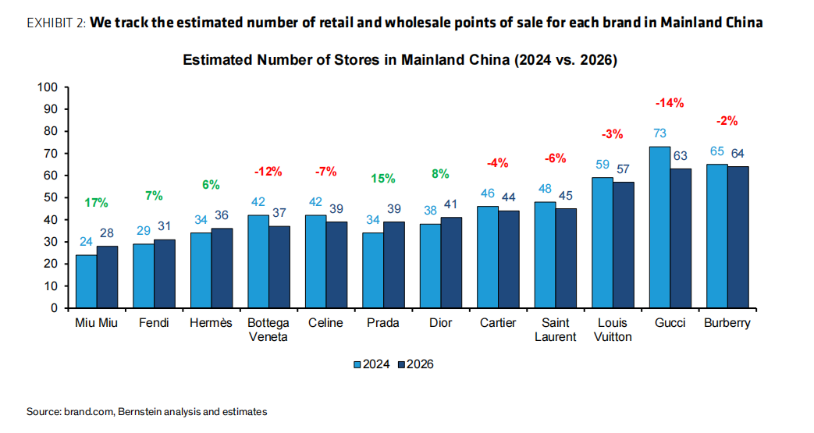
一句话核心
中国奢侈品的增长逻辑反转了：从"中产扩大→不断开店"变成"预期转弱→关店收缩"，只有顶级品牌（爱马仕）和头部城市还在扩张，中间层品牌在关店掉队。
背景与关键数据
奢侈品消费是观察中产阶级财富感和消费信心的绝佳窗口（因为它是最典型的"可选消费"，日子好才买）。伯恩斯坦描述了一个完整的逻辑反转：
- 过去（增量扩张）：中产扩大 → 消费升级 → 品牌疯狂开店 → 门店多带动销售多。
- 现在（存量竞争）：收入/资产预期转弱（房价跌、股市波动）→ 中产砍奢侈品支出 → 转向海外代购和平价替代 → 单店效率下降 → 弱势品牌关店 → 资源向头部城市/商场/高净值客群集中。
结果是K 型分化：顶级富人向爱马仕等最强品牌集中；价格敏感者去日韩买（更便宜）；中产转向轻奢和国货。最受挤压的是欧洲传统奢侈品牌的"入门级"产品（原本靠中产撑起的那一层）。
图片解读
图1（伯恩斯坦柱状图：中国大陆各品牌门店数量 2024 vs 2026）：浅蓝=2024，深蓝=2026，标注了各品牌门店数的增减百分比。绿色为增、红色为减：
- 逆势扩张（增）：Prada +15%（34→39）、Miu Miu +17%（24→28）、Dior +8%（38→41）、Fendi +7%（29→31）、Hermès +6%（34→36）。
- 收缩关店（减）：Gucci -14%（73→63，减幅最大）、Bottega Veneta -12%（42→37）、Celine -7%（42→39）、Saint Laurent -6%、Cartier -4%、Louis Vuitton -3%、Burberry -2%。
信号很清晰：Hermès、Prada、Miu Miu 这类"最顶级"或"当红"品牌仍在开店，而 Gucci、BV 这类"中间层/掉队"品牌在大规模关店。 印证了"存量竞争、强者恒强"的判断。
为什么重要 / 对市场和经济的含义
奢侈品门店数据是中国消费降级/分层的微观证据。含义：①中产消费信心确实在收缩（呼应帖1 房价、帖5 人口、帖6 收入疲弱）；②消费市场出现 K 型分化——高端韧性、中端塌陷、平价与国货受益；③对投资于欧洲奢侈品股（LVMH、Kering/Gucci、Richemont）的人是重要预警：中国区中端品牌承压。这也和帖3、帖6 的"科技强、传统弱"共同构成今天的大主题——无论中美、无论行业，"分化"是 2026 年的关键词。
延伸知识
"K 型复苏/分化"是什么？ 经济学里用字母形容复苏形态：V 型（快速反弹）、U 型（缓慢筑底）、L 型（长期低迷）。而"K 型"指的是同一个经济体内部走向两极——高收入群体/头部企业向上（K 的上半支），低收入群体/尾部企业向下（K 的下半支）。奢侈品的"爱马仕扩张、Gucci 关店"正是消费端 K 型分化的缩影。背后的驱动是资产价格：有房有股的富人财富受冲击小甚至受益，而依赖工资、受房价下跌影响大的中产则捂紧钱包。理解 K 型分化，能帮你看懂为什么"宏观数据还行、身边人却喊消费不动"——因为平均数掩盖了结构。
帖 13 · 日经：台积电持续加码对美投资，供应链回流美国
时间：2026-07-22 18:04 标签：#金融#
帖子原文
日经：台积电（TSMC）的美国制造基地在持续增加。该公司7月16日宣布追加投资1000亿美元。已公布的对美投资共计2650亿美元，台积电加大投资力度是为了应对美国的人工智能（AI）需求。台在2026年1月与美国达成的贸易谈判中，承诺对美直接投资2500亿美元。如果不表现出把通过AI需求获得的收益以投资形式回流美国的姿态，贸易方面的不均衡有可能导致与美国之间的裂痕。 #金融#
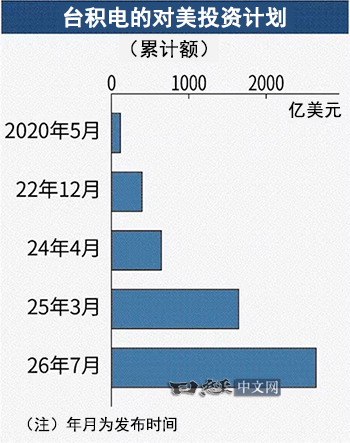
一句话核心
台积电 7 月 16 日又追加 1000 亿美元对美投资，累计承诺达 2650 亿美元——既是为了满足美国爆发的 AI 芯片需求，也是为了对冲台美之间的贸易/政治压力。
背景与关键数据
台积电（TSMC）是全球最大的芯片代工厂，英伟达、苹果、AMD 的先进芯片几乎都由它制造，是 AI 产业链最核心的一环。这条帖子讲的是它持续把产能和投资搬到美国：
- 7 月 16 日追加 1000 亿美元，累计对美投资承诺达 2650 亿美元。
- 台积电在 2026 年 1 月与美国的贸易谈判中，承诺对美直接投资 2500 亿美元（现在已加码超过这个数）。
- 双重动机：①接住美国的 AI 芯片需求（就近建厂供货）；②政治对冲——若不把 AI 赚的钱以投资形式"回流"美国，可能引发贸易失衡摩擦，损害台美关系。
图片解读
图1（日经中文网柱状图：台积电对美投资计划·累计额）：横轴是累计投资额（亿美元），纵轴按"公布时间"排列，可见承诺额一路攀升：
- 2020 年 5 月：约 120 亿美元（最初的亚利桑那工厂）
- 2022 年 12 月：约 400 亿
- 2024 年 4 月：约 650 亿
- 2025 年 3 月：约 1650 亿
- 2026 年 7 月：约 2650 亿美元
这根不断加长的柱子，直观展示了台积电对美承诺在五年里翻了 20 多倍，且加速上升。
为什么重要 / 对市场和经济的含义
这条帖子是"AI 主线"和"地缘/供应链回流"的交汇点。含义：①AI 需求真实且旺盛，强到让台积电不断加码建厂——这为帖3（瑞银看多美股 AI）提供了产业侧佐证；②半导体供应链正在"去全球化、向美国集中"，背后是美国以贸易和安全为筹码推动"制造业回流"；③对台积电自身，赴美建厂成本高（美国建厂/人工远贵于台湾），短期压缩毛利，但换取的是"政治安全"和贴近客户。对投资者，这既反映 AI 景气度，也提示"地缘正在重塑全球半导体格局"。
延伸知识
"友岸外包 / 制造业回流"是什么？ 过去几十年全球化的逻辑是"哪里便宜在哪造"（成本最优）。但疫情断供、中美博弈、俄乌与中东冲突后，各国转向"哪里安全在哪造"——把关键产业（芯片、医药、电池）搬到本土（reshoring 回流）或盟友国家（friend-shoring 友岸外包），哪怕更贵。台积电赴美、以及美国《芯片法案》给补贴，都是这股潮流的体现。代价是效率下降、成本上升（长期通胀的一个结构性推手），收益是供应链韧性和安全。这也和帖7、帖8 的"全球资本重新配置"是同一枚硬币——世界正从"效率优先"切换到"安全优先"，这是理解未来十年宏观格局的一条主线。
今日全图索引
| 帖号 | 时间 | 主题 | 标签 | 图片文件 |
|---|---|---|---|---|
| 1 | 14:08 | 房地产拍卖市场以价换量 | #房价# | post1_img1.png, post1_img2.png |
| 2 | 上午 | 外资地产基金浮亏40–50%撤退 | #金融# | post2_img1.png, post2_img2.png, post2_img3.png |
| 3 | 上午 | 瑞银看多美股（AI盈利） | #美股# | post3_img1.png |
| 4 | 上午 | 美伊僵持、油价冲高、长端美债收益率上行 | #其他国家经济# | post4_img1–img8.png（8张） |
| 5 | 上午 | 人口性别失衡与延迟退休 | #人口# | post5_img1.png, post5_img2.png |
| 6 | 上午 | 出口/PPI转正但传统制造仍通缩 | #经济数据# | post6_img1.png |
| 7 | 上午 | 央行退场后谁接盘政府债券 | #金融# | post7_img1.png, post7_img2.png, post7_img3.png |
| 8 | 上午 | 美元上半年走强、避险碾压黄金 | #金融# | post8_img1.png, post8_img2.png |
| 9 | 上午 | 撑油价的四个库存缓冲垫将耗尽 | #金融# | post9_img1.png |
| 10 | 上午 | 大模型量化央行语气：美联储/欧央行转鹰 | #金融# | post10_img1.png, post10_img2.png |
| 11 | 上午 | 花旗：这次不是2024年9月强刺激 | #经济数据# | post11_img1.png |
| 12 | 上午 | 中国奢侈品从开店扩张转入关店 | #经济数据# | post12_img1.png |
| 13 | 18:04 | 台积电加码对美投资至2650亿美元 | #金融# | post13_img1.png |
全部原图保存在
daily_summaries/jason_images/2026-07-22/子目录；本报告已将图片内嵌为 base64，可单文件独立查看。免责声明：本报告仅为对 Jason 不跪公开转述之研报/新闻的学习性解读，所涉投行观点（瑞银、花旗、伯恩斯坦、摩根士丹利、巴克莱等）均为其各自立场，不构成任何投资建议。